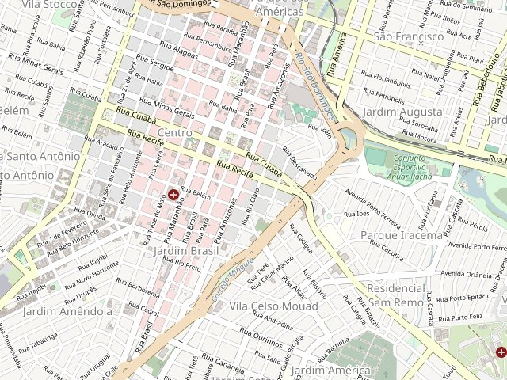

WARDRIVER: veja o painel e o app funcionando
Um projeto de faculdade que usa um ESP32 barato pra mapear redes Wi-Fi. Ele tem duas telas: o painel web, pra acompanhar a coleta em tempo real ou revisar depois, e um app mobile, pra sincronizar o cartão SD do dispositivo direto do celular. As telas abaixo são uma simulação de como cada uma funciona, com dados de exemplo.
criptografia
mapa de cobertura

redes coletadas9 / 9
| SSID | BSSID | RSSI | CH | CRIPTO | COORD. |
|---|---|---|---|---|---|
| CLARO_WIFI_04 | EC:08:6B:53:DE | -38 dBm | 6 | WEP | -21.1372, -48.9761 |
| Wardriver_Lab | 00:39:56:3C:AB | -40 dBm | 6 | WPA2 | -21.1370, -48.9764 |
| rede_aberta_lanchonete | 18:D6:C7:2A:44 | -41 dBm | 1 | OPEN | -21.1369, -48.9759 |
| ZTE_5GHz_F1 | 00:1D:BF:9F:49 | -42 dBm | 9 | WPA | -21.1375, -48.9757 |
| BlueLink-IoT | FC:EC:DA:7A:9C | -44 dBm | 9 | WPA2 | -21.1368, -48.9762 |
| Repetidor_Sala | C8:3A:35:FD:10 | -45 dBm | 6 | WPA2 | -21.1374, -48.9766 |
| DLINK-AABBCC | 10:62:EB:3C:F4 | -47 dBm | 1 | WPA2 | -21.1371, -48.9755 |
| net_visitantes | 3C:A6:2F:04:9D | -52 dBm | 11 | OPEN | -21.1366, -48.9769 |
| ESCRITORIO_01 | 44:32:C8:87:5C | -55 dBm | 5 | WPA2 | -21.1377, -48.9760 |
Wardriver Sync
Desconectado
Redes
9 únicasWardriver_Lab
WPA2 · canal 6
CASA_562
WPA2 · canal 1
ZTE_5GHz_F1
WPA · canal 9
(oculta)
Aberta · canal 1
BlueLink-IoT
WPA2 · canal 9
net_visitantes
Aberta · canal 11
DLINK-AABBCC
WPA2 · canal 1
Repetidor_Sala
WPA2 · canal 6
ESCRITORIO_01
WPA2 · canal 5